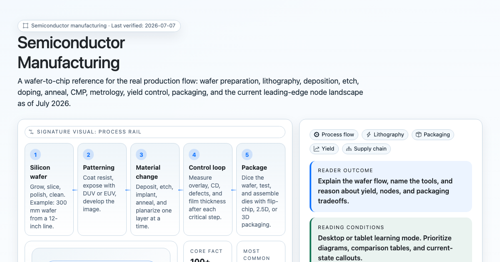
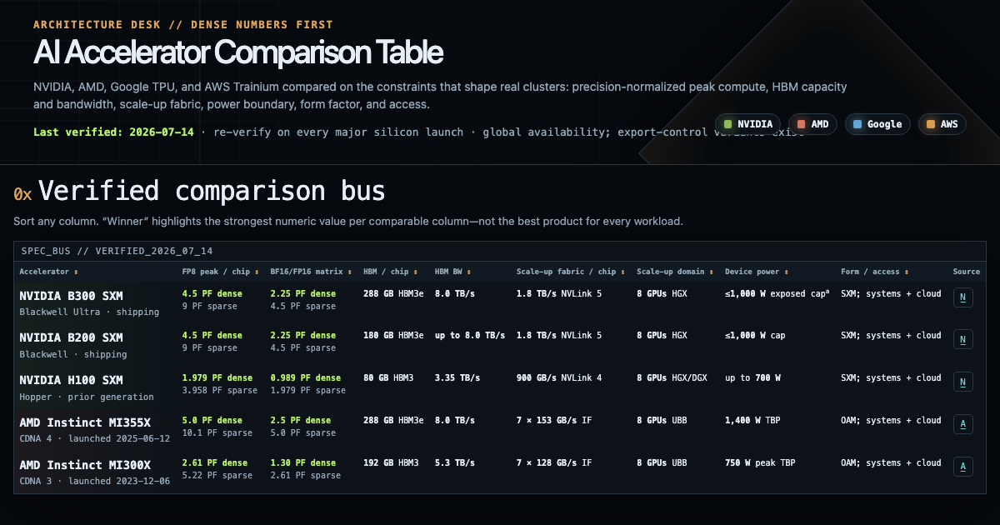
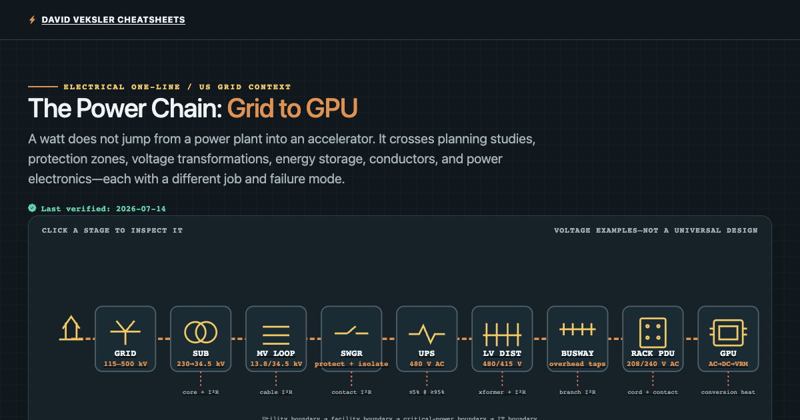
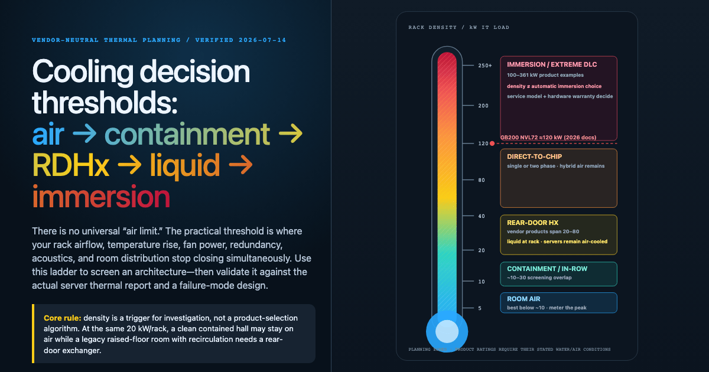
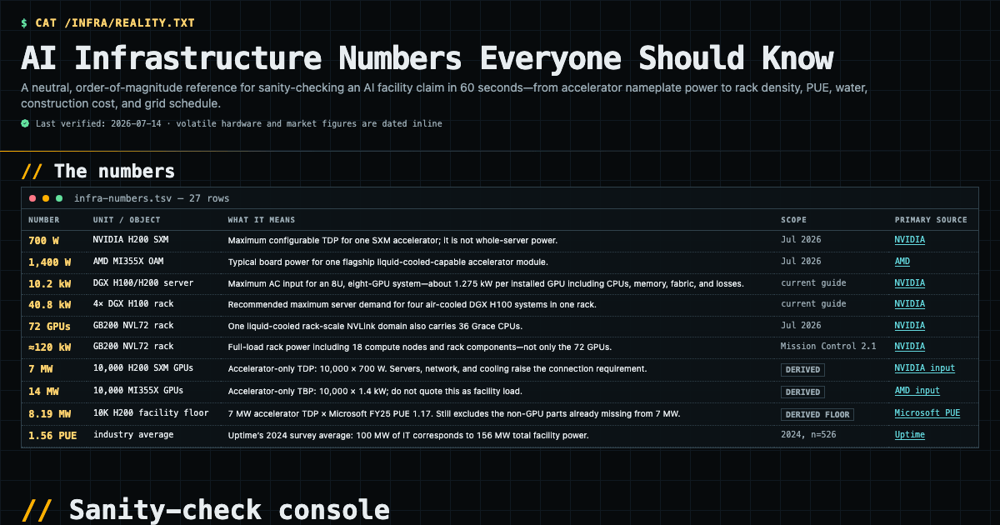
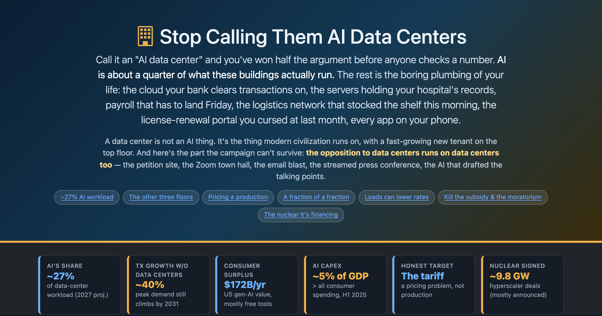
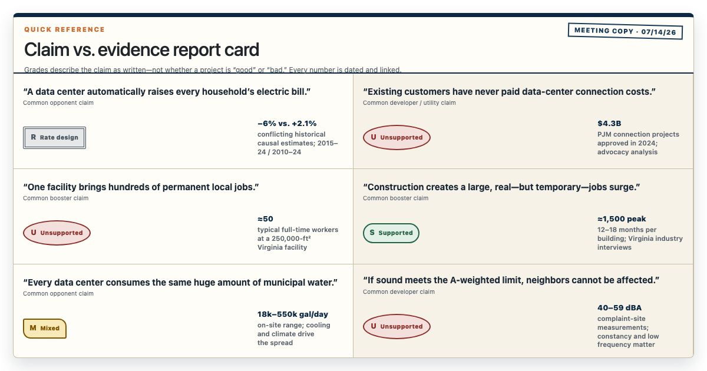

SiliconEUVFab
Semiconductor Manufacturing: Wafer to Chip
Wafer growth, lithography, deposition, etch, doping, packaging, yield, and fab economics — why leading-edge silicon is the scarcest link.
Open guideBehind every AI model is a physical machine the size of a warehouse. This hub walks that machine layer by layer — from the silicon in the fab, up through the accelerators, the grid-to-GPU power chain, and the cooling that keeps it alive, out to the electricity bills and water it draws from the town next door — and routes you to the deep dive for each.
An AI data center is not one thing — it is seven stacked engineering problems, each with its own binding constraint. Read top to bottom to follow a watt of power from the substation to a training run, or jump straight to the layer you came for.
| Layer | The question it answers | Deep dive |
|---|---|---|
| The chip | How is the silicon that runs AI actually made, and why is leading-edge capacity so scarce? | Semiconductor Manufacturing |
| The accelerator | Which GPU or custom chip, and how do NVIDIA, AMD, Google and AWS silicon really compare? | AI Accelerator Comparison |
| The power chain | How does grid power actually reach a rack of GPUs — and why is interconnection the bottleneck? | Data Center Power Chain |
| Cooling | At what rack density does air cooling stop working, and when must you go to liquid? | Cooling Thresholds |
| The numbers | kW per rack, MW per 10,000 GPUs, PUE/WUE, capex per megawatt — the orders of magnitude. | AI Infrastructure Numbers |
| What they run | Is it really "all AI"? What share of data center load is actually AI vs. everything else? | Stop Calling Them AI Data Centers |
| The neighbors | Do they raise electric bills, create jobs, drain water? Every local claim, graded by evidence. | A Data Center Comes to Town |
The AI compute race is usually reported as a chip shortage. On the ground, the harder ceilings are power, heat, and permits — and they arrive in this order.
Advanced chips and their high-bandwidth memory come from a handful of fabs and packaging lines. Capacity, not design, gates supply.
A large campus can want as much power as a small city. The multi-year interconnection queue, not the utility bill, is the real wait.
As racks pass the density where moving air can carry the heat away, liquid cooling stops being optional and becomes the design.
Siting runs into electricity rates, water for cooling, and community pushback — often the slowest constraint of all.
Capex scales with megawatts, not square feet. The infrastructure numbers page puts real figures on each order of magnitude.
Most existing data center load is the ordinary plumbing of the internet. Separating hype from load is its own field guide.
The full deep-dive references behind the stack map above, in build order — chip to community.

Wafer growth, lithography, deposition, etch, doping, packaging, yield, and fab economics — why leading-edge silicon is the scarcest link.
Open guide
NVIDIA, AMD, Google TPU and AWS silicon compared on dense compute, HBM, bandwidth, interconnect, and power — with transparent efficiency math.
Open guide
Grid to GPU: interconnection queues, substations, switchgear, UPS, busways, and rack PDUs — plus behind-the-meter gas and SMRs.
Open guide
The decision ladder from air to containment to rear-door to direct-to-chip to immersion, with reconciled kW/rack thresholds and PUE evidence.
Open guide
kW per rack, watts per GPU, PUE and WUE bands, MW per 10K GPUs, capex per megawatt, and time-to-power — the order-of-magnitude anchors.
Open guide
AI is only about a quarter of what data centers run — the rest is the plumbing of modern civilization. A fact-checked reference on load and electricity.
Open guide
Do data centers raise electric bills? How many jobs do they really create? Booster and opponent claims, each graded against published evidence.
Open guide